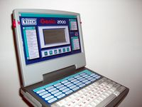
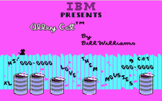
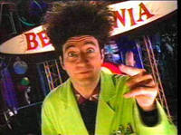
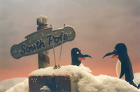

Nostalgia - La web de emijrp
Cosas que forman parte de mi pasado y que cuando las recuerdo me producen nostalgia.
| Tabla de contenidos |
|---|
|
1. Genio 2000 2. Amstrad PC-1512 3. Otros 4. Referencias |
Genio 2000
|  |
| Genio 2000 |
{kind=link}
El Genio 2000 es un ordenador de juguete educativo con apariencia de portátil fabricado por VTech. Cuenta con multitud de programas para aprender sobre todas las áreas del conocimiento.[1][2]
La pantalla muestra texto únicamente, hasta cuatro líneas. El Genio 2000 es ampliable con cartuchos con otras actividades o más memoria. Funciona con pilas o con adaptador de corriente y tiene un puerto paralelo para conectarle una impresora.
Estas son las actividades de las que dispone:
- Juegos de palabras: Busca la letra, Recuerda la palabra, Plurales, Verbos, Revoltijo de letras, La palabra misteriosa, Derivados, Sinónimos, Antónimos, La letra loca, La nueva palabra, Trueque de letras, Alfapuzzle, Revoltijo, Acertijo gramatical.
- Matemáticas: Suma, Resta, Multiplicación, División, Fracciones/Decimales, Fracciones/Porcentajes, Ratios, Álgebra, Repaso a las matemáticas, El signo perdido.
- Trivial: Ciencias, Cine y televisión, Historia y geografía, General, ¿Qué soy?
- Juegos y funciones: El número relámpago, BASIC, Imprimir texto, Calculadora, Cartuchos adicionales.
Se puede jugar en cuatro niveles de dificultad y con hasta dos jugadores.
Este fue mi primer "ordenador". Luego vendría el Amstrad PC-1512.
Amstrad PC-1512
|  |
| Alley Cat es un juego para MS-DOS de los años 80, en el que eres un gato que come ratones, huye de perros, etc, lo típico que hace un gato. |
{kind=link}
El Amstrad PC-1512 es un ordenador creado en 1986 con procesador Intel 8086 de 8 MHz, 512 KB de RAM, gráficos CGA y bahías de 5 1/4 bien para alojar disqueteras tipo floppy o un disco duro. La fuente de alimentación la tiene en el monitor y se enciende por la parte de atrás. Soporta teclado y ratón. Arranca con un disquete MS-DOS 3.2 que se puede copiar al disco duro y así arrancar más rápidamente.
Entre los programas que más utilice estaba el procesador de textos WordStar.
Algunos de los juegos que pude disfrutar:
- Alley Cat. Se puede jugar online.
- Golden Axe
- Invaders (se llamaba Invasors)
Aquí un vídeo del Amstrad PC-1512.
Otros
|  |
|  |
{kind=link}
{kind=link}
- El chavo del 8: serie mexicana
- El mundo de Beakman: programa educativo sobre ciencia
- La noche de los castillos (RTVE): concurso de aventuras de temática medieval
- Leaderboard: juego de golf https://www.youtube.com/watch?v=rfNo42SomBs
- Nintendo (NES) fue mi primera videoconsola y los juegos SuperMarioBros, Tom y Jerry, Los Simpson, World Cup, Silent Service.
- Starfox?
- Tazos, mastertazos
- Valor y coraje: programa que dramatizaba tragedias sucedidas en España. https://www.youtube.com/watch?v=3k9Z0Sdty3E
- Virtua Cop 2: videojuego
- El Juego de la Oca
- La Banda del Sur
- Series: Doraemon, Los Fruitis, Los Pitufos, Los Supersónicos, Dinosaurios,
Referencias
- ↑ Genio 2000 en Wikipedia
- ↑ Genio 2000 en Museo8bits
 |
Esta página fue modificada por última vez el 2018-09-20 19:50:42 (UTC) | GitHub pages |